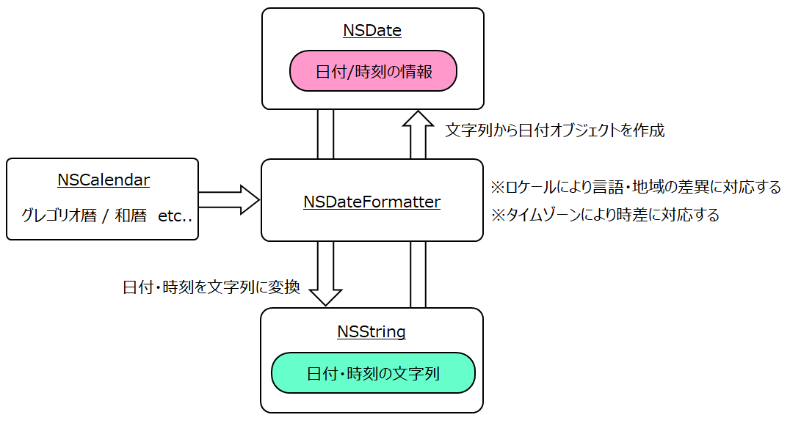
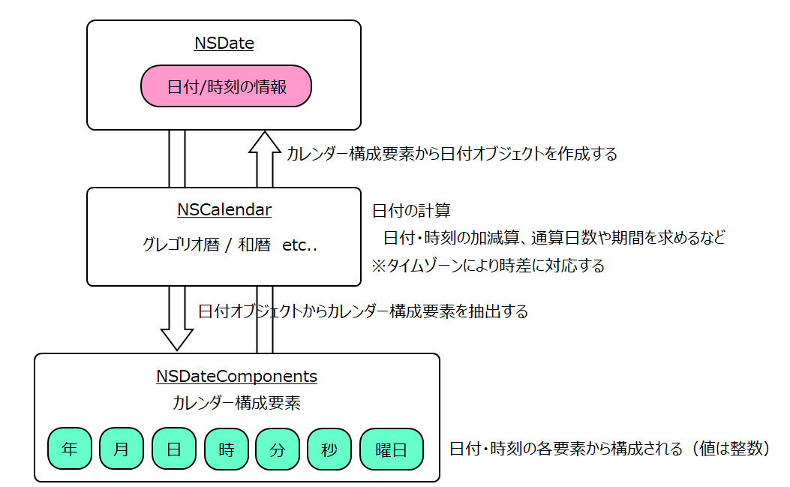

日付に関連するクラスについて
NSDate / NSCalendar / NSDateFormatterクラス
NSDateクラス
日付に関する基本情報を保持する（年、月、日、曜日、時、分、秒など）
日時は、GMT（グリニッジ標準時）と同じ値を持つ。
このクラスは、日時の情報のみ保持し、日付の属性であるタイムゾーン、カレンダーの種類、地域・言語による表示様式の差異などに関しては関与しない。これらの事柄は以下に説明するクラスが担当する。
NSCalendarクラス
NSCalendarクラスは、年・月・日・曜日など暦/カレンダーに関する情報を保持する。システムは、規定値としてグレゴリオ歴（gregorian）のカレンダーを作成する。普通はグレゴリオ歴以外を使うことはないだろうが、年に元号を使用する場合は、和暦カレンダを作成する必要がある。（イスラム暦、ヘブライ歴などにも対応しているようだ）
Calendarオブジェクトを直接利用するのは和暦を使用したり、後述する DateComponentsクラスと連携し、Calendarクラスのメソッドを利用し日付の計算を行う場合である。
なお、曜日（Manday or 月曜）や月（January or １月）の名前は国・言語によって異なるが、この差はシステムロケールによる相違であり、カレンダの種類による違いではない。
NSDateFormatterクラス
日付オブジェクトを文字列として表示する。日付の文字列から日付オブジェクトを作成する。タイムゾーン、言語・地域（ロケール）を管理する
日付（NSDateオブジェクト）を文字列に編集して出力する
NSDateFormatterオブジェクトのstringWithFormatメソッドにより、日付オブジェクトの日時を、指定した日付書式に従って文字列に出力する。
年月日・時分秒に相当するキーワードは、Unicode Technical Standard #35 を参照のこと。区切り文字は例にも示した通り任意である。
曜日は、日付オブジェクトの内部では、日曜から始まる整数値（1〜7）で保持されている。日付書式子の "e" は整数値そのまま、
"E" は、ロケール（言語・地域）に応じた曜日名に変換した値が表示される。日本であれば、日, 月, 火, ...となる。
クラスで用意された定型的な4種類の編集形式を選ぶことができる。dateStyleプロパティに NSDateFormatterStyle定数を指定する。
現在日時を表示する
タイムゾーン（時差の調整）について
日付オブジェクトの日時はグリニッッジ標準時（GMT）で保持されるので、英国以外の地域で日時を表示したり、日時を指定して日付オブジェクトを作成したりするとき、時差の調整が必要になる。
調整は NSDateFormatterオブジェクトのプロパティに指定したタイムゾーンの基づいて行われる。システムのデフォルトでは、プロパティにはその地域のタイムゾーン（localTimeZone）が自動的に設定される。
日本のタイムゾーンは、名称"Asia/Tokyo”、略称”JST"
アプリケーションは、NSDateFormatterオブジェクトを通して時差を意識することなく日付を取り扱うことができる。
タイムゾーンを変更する場合には、タイムゾーン名を指定してTimeZoneオブジェクトを作成し、DateFormatterオブジェクトのtimeZoneプロパティにセットする。次のコードはタイムゾーンをグリニッジ標準時に変更する。
日付の文字列から日付（NSDateオブジェクト）を作成する
DateFormatterクラスの dateFromStringメソッドにより、指定したフォーマット指定子の文字列から日付オブジェクトを作成する。年月日・時分秒に相当するキーワードは、Unicode Technical Standard #35 を参照のこと。区切り文字は任意。作成に失敗すると nilが返る。
和暦を使う
NSDateFormatterクラスのカレンダー属性に和暦カレンダーを設定すれば、和暦を操作することができる。元号を表すキーワードは"G"になる。
日付オブジェクトを和暦で表示する
和暦の日付文字列から日付オブジェクトを作成する
言語・地域（ロケール）について
システムの設定でロケールは日本語・日本（ja_JP）になっているので日本語を使用する場合は特に何も指定しなくてよい。他地域・他言語を使用する場合は、Localeオブジェクトを作成し、NSDateFormatterオブジェクトのlocale属性に設定する。次の例ではロケールを英語（言語）・米国（地域）に変更している。
NSDateComponentsクラス

NSDateComponentsオブジェクトは日付・日時の構成要素（年、月、日、曜日、時、分、秒）を保持する。NSCalendarクラスと連携して日付の計算などを行う。
DateComponentsオブジェクトの取得
NSCalendarクラスのcomponents:メソッドを使用し NSDateオブジェクトからNSDateComponentsオブジェクトを作成し、日付・時刻の要素を取得する。
componentsに定義していない要素には nullを意味する符号付き64bit整数の最大値が設定されるが、無意味な値なので参照してはいけない。
日付オブジェクトの作成
NSDateComponentsオブジェクトからNSDateオブジェクトを作成することができる。NSDateComponentsオブジェクトの各要素に日時を設定する。未設定の要素の値はゼロとなる。
日付の計算を行う
日付の操作に関して色々な例を示す。
(1) 月末日を求める
NSDataComponentsオブジェクトから当月末日の NSDateオブジェクトを作成する。要素の年月には対象日の年月を、日は当月の末日（日数）を指定する。末日は NSCalendarクラスの rangeメソッドで求まる。これらから日付オブジェクトを作成すれば、当月末日の日付を得ることができる。
(2) 日付の計算（加算/減算）
日付の加算/減算は、計算対象のオペランドに NSDataComponentsオブジェクトの要素（年月日時分秒）を指定する。
次の例はある日付に対して、１年2ヶ月３日後または、前を求める方法である。計算には NSCalrndarクラスの dateByAddingComponentsメソッドを使用する。
月末日を求めるには、日付の加算/減算によって行うこともできる。
対象日の月の１日から１ヶ月を加算して翌月の1日の日付を求め、そこから1日を引けば月末日となる。(1)の別解
2021/2/1 + 1ヶ月 = 2021/3/1
2021/3/1 - 1日 = 2021/2/28
(3) 日付の差（期間）を求める
NSCalendarクラスの components:fromDate:toDate:メソッドを使用すれば、二つの日付の差（期間）を NSDataComponentsオブジェクトとして得ることができる。
もう一つの方法として、暦の通算日数の差から期間を求める方法がある。日付の表し方の一つとして、グレゴリオ暦の場合、西暦1年1月1日0時からの通算日時で表わすことができる。NSCalendarクラスの ordinalityOfUnit:メソッドを使う。例題では、ある日付が暦の始まりを起点としたとき何日目であるかを返す。例えば、起点を yearにすれば年初からの通算日数が得られる。（49日）
日付を通算日数として表しておけば、二つの日付の差分は、そのまま日数の差（期間）となる。
曜日を求める
NSDateComponentsオブジェクトの曜日要素（weekDay）には、日曜から始まる整数値（1〜7）がセッットされる。整数値を曜日名に変換するには、NSDateFormatterクラスのシンボル名配列から求めることができる。整数値-1を添え字として配列を読み込めば対応する曜日の文字列を取得できる。曜日名は、ロケール（言語・地域）に応じた名前に変換される。
日付操作ライブラリ
日付の操作として代表的と思われる処理を共通ライブラリにしてみた。